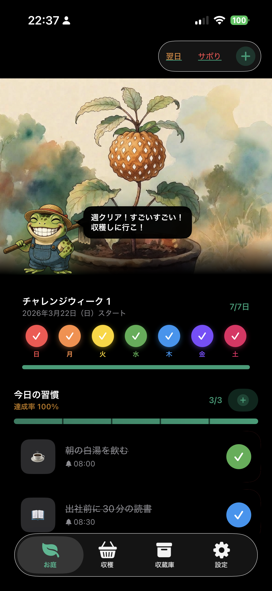
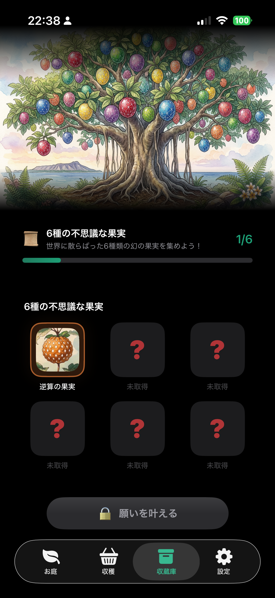
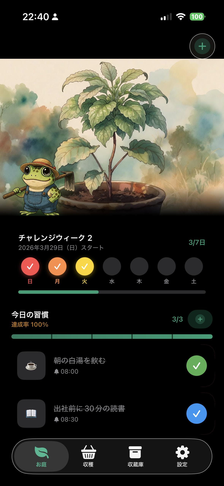
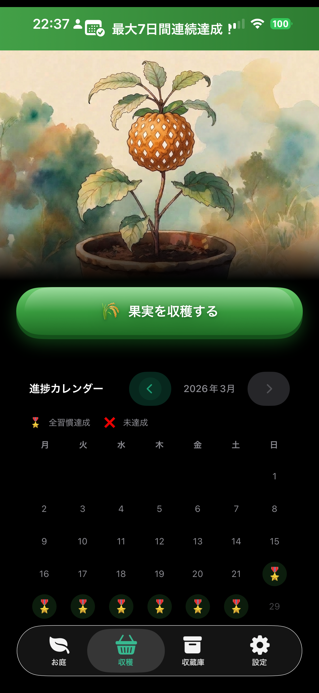
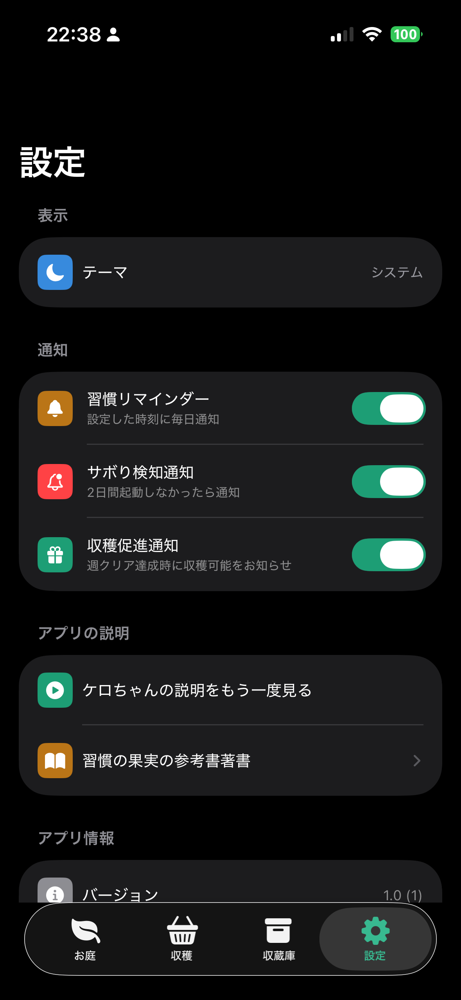

✦ Curiouser and Curiouser ✦
習慣の果実 Tsuzukeru — The Habit Garden
ケロと一緒に、今日も庭を育てよう。
続けるほど、実は輝きを増していく。



Scroll
ケロと一緒に、今日も庭を育てよう。
続けるほど、実は輝きを増していく。


「この国には、6つの伝説の果実が眠っている。
君の習慣だけが、それを育てる力を持つよ。
さあ、一緒に庭へ行こう！」
— ケロ（案内役）
「つづける」は、習慣を続けると庭の植物が育ち、不思議な果実を収穫できる習慣育成ゲームアプリです。 失敗しても、ケロは責めません。ポジティブな言葉でそっと背中を押してくれます。
毎日・曜日指定・週1回から選べる。リマインダー通知も設定できる。
達成するたびに植物が成長。天気も晴れに変わり、ケロが喜んでくれる。
7日間達成で植物が成熟。「収穫する！」ボタンを押して、伝説の果実をゲット。
全6種の果実を集めると、神様ケロの正体が明かされ、特別なエンディングへ。
カエルのキャラクター「ケロ」は、あなたの庭をいつも見守っています。
習慣の達成状況によって表情が変わり、吹き出しで声をかけてくれます。
不思議の国のアリスに登場するチェシャ猫のように、
ケロはこの不思議な庭の秘密を知っています——
習慣をチェックするたびにポジティブな言葉で背中を押してくれる
「週クリア！すごいすごい！収穫しに行こ！」満面の笑みで一緒に喜ぶ
植物が枯れても、責めずに「また次の週、一緒に頑張ろう」と励ます
6種コンプリート後に正体が明かされる。その姿はまるで不思議の国の神様
アプリは4つのタブで構成されています。
それぞれが、この不思議な庭の異なる顔を持っています。
毎日タスクをチェックするたびに、植物はすくすくと育ちます。 天気はあなたの達成率に連動して変化—— 全部達成すると空が晴れ渡り、ケロが笑顔で喜んでくれます。

7日間の習慣を達成すると植物が成熟し、収穫のときを迎えます。 どの果実が手に入るかは、お楽しみ—— 進捗カレンダーで過去の達成記録も確認できます。

収穫した果実は収蔵庫に永久保存されます。 週に失敗しても、集めた果実は消えません。 巨大な習慣の木の下に、6つの謎めいたスロットが——
習慣は続けることが大切。だからこそ、通知の設定を柔軟にできます。 リマインダー・サボり検知・収穫促進の3種類の通知をそれぞれON/OFF可能。

それぞれの果実は、習慣の種類と深く結びついています。
どの順番で集まるかは——運命のみが知っています。
✦ そして、全てを超えた先に——幻の果実が眠っている ✦
6種コンプリート後、さらなる旅が待っています
スティーブン・R・コヴィー博士の著書 「7つの習慣」にインスピレーションを受け、このアプリは生まれました。 各果実は、7つの習慣の本質的な要素と対応しています。
自分の行動・感情・選択はすべて自分が決める
人生の目的を明確にし、逆算して今日を生きる
すべての関係において相互利益を追求する
まず相手を深く聴き、共感することから始める
多様性を活かして、一人では出せない成果を生む
肉体・精神・知性・社会の4側面を継続的に更新する
※ アプリ内「設定 → 習慣の果実の参考著書」から詳細を読むことができます。
なぜ7つの習慣なのにアプリは6つ？——その謎の答えもそこに。
習慣を続けることは、魔法ではない。
でも続けた先に見えるものは——まるで魔法のようだ。
🐸 無料ダウンロード ｜ iOS 17.0以上対応 ｜ 日本語